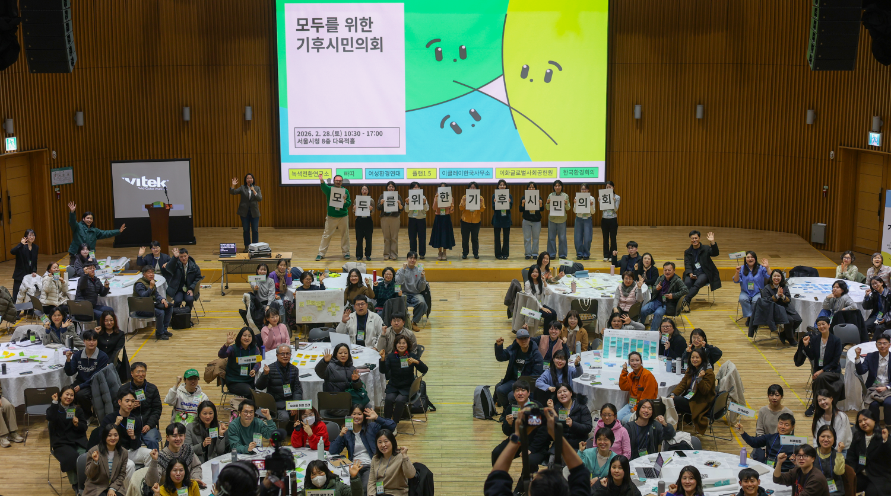
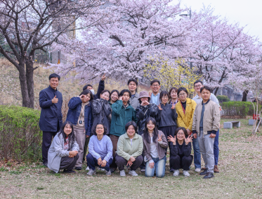

01
연구의 끝은 변화입니다
연구 결과가 시민의 언어로 번역되어 실제 삶과 정책을 바꿀 때까지 끝까지 책임집니다.
Institute for Green Transition
기후위기 대응은 단순히 에너지를 아끼는 문제가 아닙니다. 우리가 사는 도시, 돌아가는 경제, 숨 쉬는 일상이 통째로 바뀌어야 합니다. 녹색전환연구소는 그 거대한 변화의 경로를 설계하고, 당신의 삶 바로 앞까지 연결합니다.

우리가 마주한 질문
개인의 실천만으로는 바뀌지 않는 구조를 정책으로 돌파해야 합니다. 녹색전환연구소는 그 단단한 변화를 설계합니다.
"지구를 지키고 싶은 나의 진심은 어디에서 멈추고 있나요?"
우리는 매일 선택합니다. 일회용품을 줄이고, 채식을 고민하며, 대중교통을 이용합니다. 하지만 문득 막막함이 찾아옵니다. 나 혼자의 노력이 거대한 시스템을 바꿀 수 있을까?
기후위기는 개인의 선의만으로는 해결될 수 없습니다. 국가의 예산이 쓰이는 방향이 바뀌어야 하고, 기업의 투자 기준이 새로 세워져야 하며, 우리 동네의 법과 규칙이 재설계되어야 합니다.

우리의 약속
우리는 현장의 절박함을 데이터로 증명하고, 시민의 언어로 번역해 제도와 예산의 우선순위를 바꿉니다.
01
연구 결과가 시민의 언어로 번역되어 실제 삶과 정책을 바꿀 때까지 끝까지 책임집니다.
02
시민들이 맡긴 숙제를 해결한다는 책임감으로, 시민의 효능감을 높이는 결과를 만듭니다.
03
지역 문제를 데이터로 입증해 정부와 국회가 움직일 수밖에 없는 해결책을 제안합니다.

증명된 변화
기후 정책이 선언에 머물지 않도록, 정부 조직과 예산 체계가 실제로 움직이게 하는 근거를 계속 만들어 왔습니다.
0%
30대 기후정책 중 53%가 실제 국정과제에 반영되었습니다.
정부 부처 내 기후 재정 담당과 신설을 견인하며 예산의 우선순위를 바꿨습니다.
광주 녹색 일자리 조례, 전주 에너지 전환 센터 등 지역 혁신 모델을 확산했습니다.
1.5도 라이프스타일 계산기가 수십만 시민의 감축 활동과 정책을 연결했습니다.
빅테크 기업의 데이터센터 에너지 정책에 핵심 지표로 활용되기 시작했습니다.
중앙은행 기후 평가 스코어카드 기준을 세워 금융 시스템의 책임 기준을 강화했습니다.

지역과 일상
지방정부의 조례, 지역 전환센터, 시민 행동 지표까지 연결하며 기후 대응이 삶의 선택이 아니라 시스템이 되게 합니다.

Vision 2026
정권 변화에도 흔들리지 않는 녹색 전환의 기준을 세우고, 기업과 금융까지 책임의 궤도로 끌어오겠습니다.
📍
시민들의 1.5도 삶이 상상이 아닌 현실이 되는 도시 모델을 전국으로 확산하겠습니다.
₩
기업과 금융이 녹색 전환을 피할 수 없는 의무로 받아들이도록 더 강력한 경제 정책을 제안하겠습니다.
👥
시민이 주도하는 녹색 전환의 사회적 기반을 다져 흔들리지 않는 뿌리를 만들겠습니다.

함께하는 목소리
어떤 눈치도 보지 않고 가장 현실적인 해법을 끝까지 제안하기 위해, 지금 이 변화의 공동 설계자가 되어주세요.
"현장의 하소연이 법안의 문구로 바뀌는 과정을 보며 녹전연의 필요성을 절감했습니다."
— 김○○ 님, 환경 활동가
"오직 시민의 힘으로만 운영되기에, 눈치 보지 않고 가장 솔직한 해법을 말할 수 있다고 믿습니다."
— 이○○ 님, 후원 시민
"시민의 일상을 데이터로 만들고 정책으로 연결하는 방식은 한국 사회에서 유일합니다."
— 박○○ 님, 연구자
당신을 위한 예우
독립적 연구를 가능케 하는 가장 든든한 에너지가 되어주세요.
월 10,000원
연구의 동력을 만드는 사람
추천
월 30,000원
정책을 함께 설계하는 파트너
월 50,000원+
독립성을 지키는 강력한 지지자
우리는 정부나 기업의 지원금에 휘둘리지 않고 오직 시민의 후원으로만 움직이는 독립적인 길을 선택하려 합니다. 그래야만 어떤 압박에도 흔들리지 않고, 우리 공동체의 생존을 위해 꼭 필요한 가장 현실적이고 실천적인 대안을 끝까지 말할 수 있기 때문입니다. 연구의 끝이 변화의 시작이 되도록, 지금 녹색전환연구소의 든든한 파트너가 되어주세요.
Q&A
정기후원 신청 완료 후 첫 결제일은 결제 수단에 따라 당월 또는 익월 지정일에 진행됩니다. 정확한 일정은 후원 신청 페이지에서 확인하실 수 있습니다.
운영팀 메일 또는 안내 채널을 통해 본인 확인 후 언제든지 변경/해지가 가능합니다. 후원자 의사를 최우선으로 반영합니다.
네, 발급 가능합니다. 개인정보 및 발급 기준은 개인정보처리방침과 관련 법령에 따라 안전하게 관리됩니다.
독립적 연구 수행, 정책 제안 활동, 지역 기반 전환 프로젝트, 시민 대상 콘텐츠 제작과 확산에 사용됩니다.